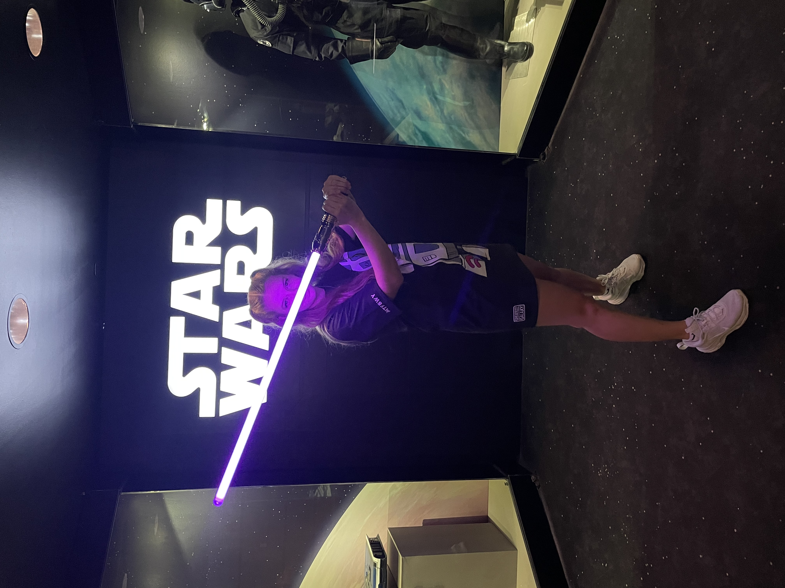
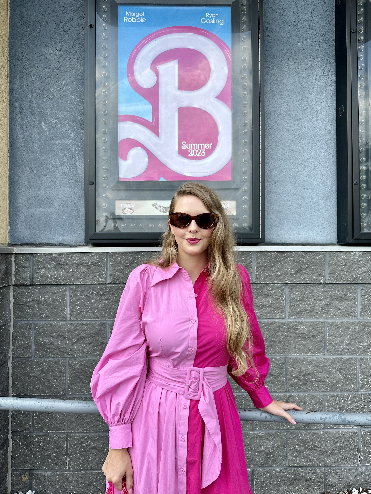
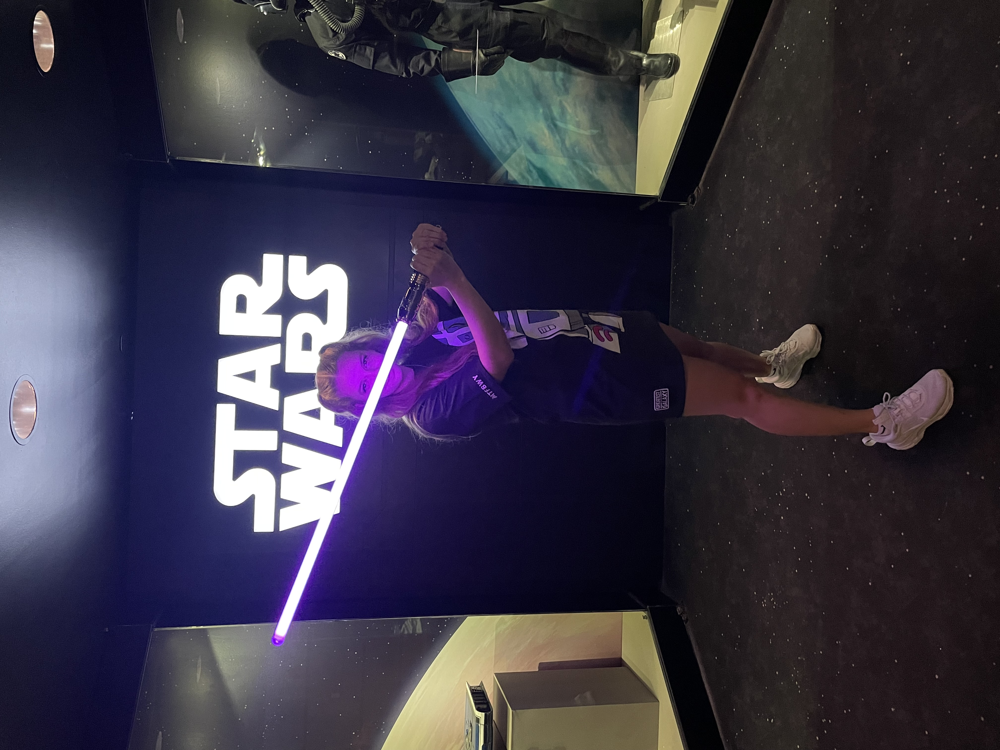
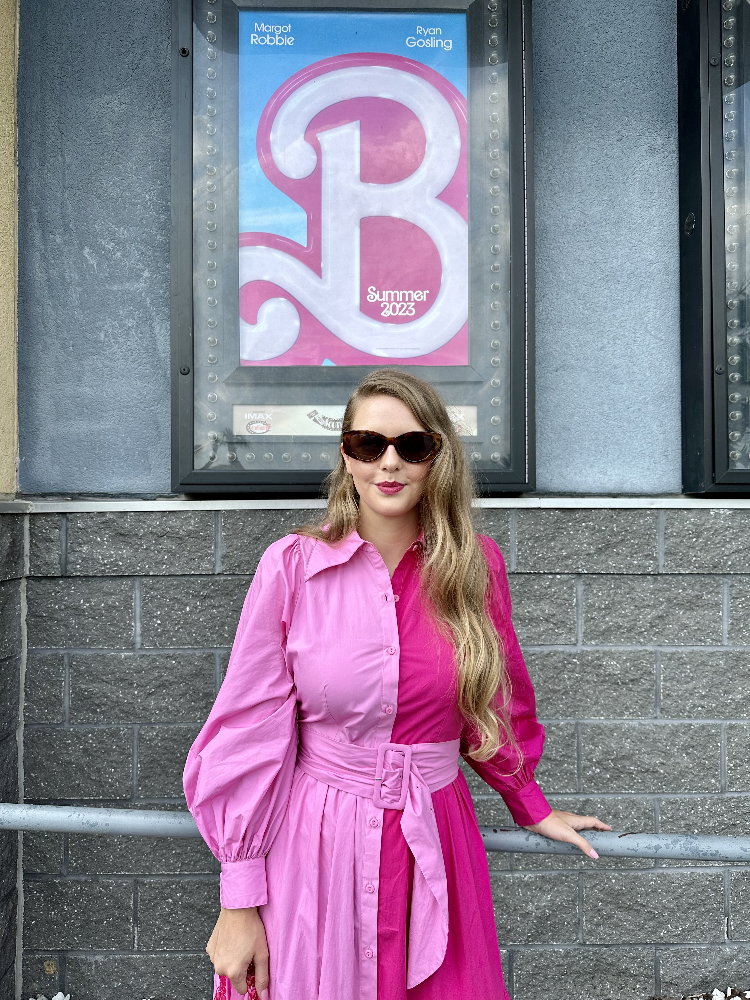

From Northern Virginia outside D.C. | Earned my undergrad degree in business management | Worked in fashion in New York City & Charleston | Flipped a house and learned a ton | Now attending the Flatiron School in New York in pursuit of a career in software development.
 




Going to school in New York, I’ve had the chance to work with great brands like Birchbox, Amerex Group, and Disney.
After graduating I worked for WGACA, a luxury brand reseller, before getting recruited to working in Sourcing at Ann Taylor. During my time there, I was promoted to Associate Manager of Sourcing & Production in 11 months, and I traveled to visit production partners in India and Hong Kong. After 2 years with Ann Taylor I moved to Charleston, SC to be closer to family.
I bought a house in downtown Charleston, SC and spent that last couple of years flipping it (for a profit).
Now I’m back in New York combining my problem-solving skills with my eye for creative curation and design by pursuing a long held dream of becoming a software engineer.